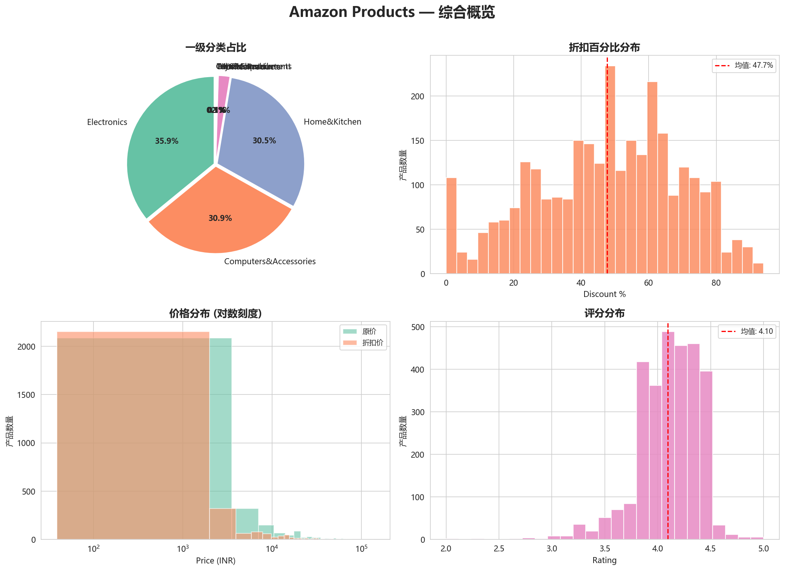
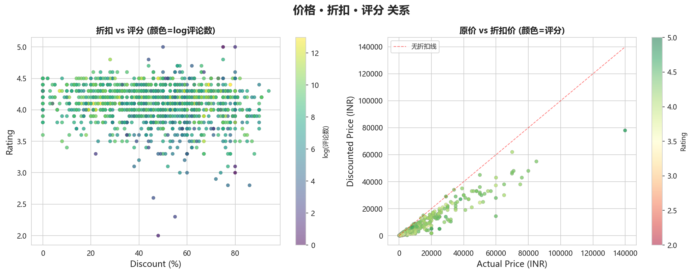
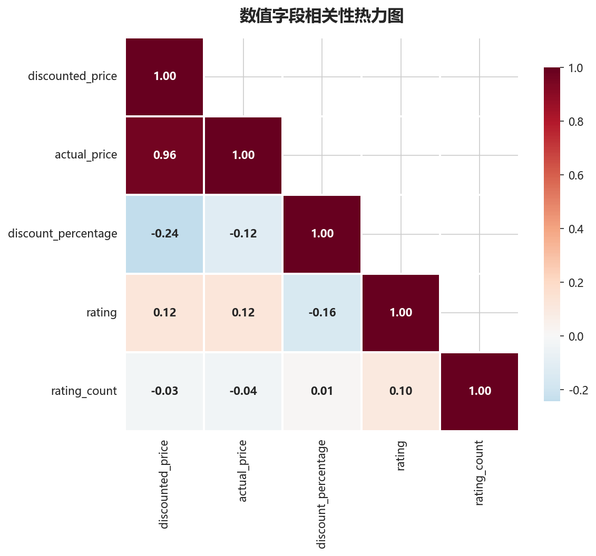
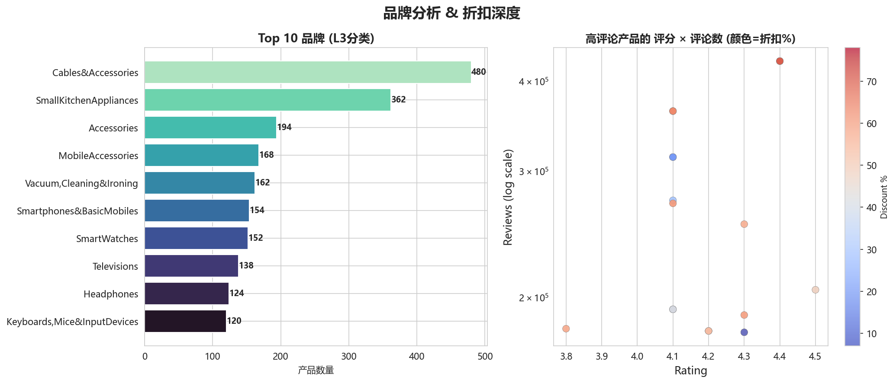
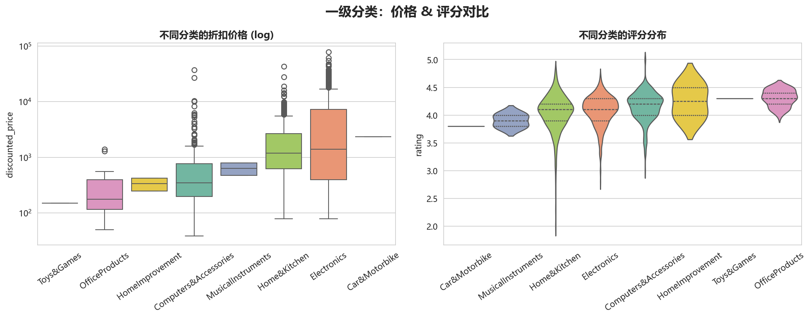
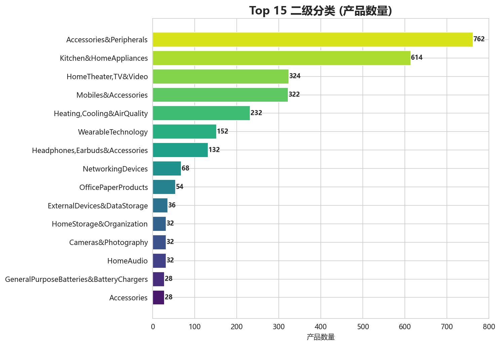

Background
本报告基于 Amazon India 平台的 2,928 条真实商品数据，覆盖 Electronics、Computers & Accessories、Home & Kitchen 等 9 大一级品类。分析目标：通过价格、折扣、评分、评论量等多维数据交叉分析，识别高潜力品类与定价策略机会，为跨境电商选品和运营提供数据支撑。
数据来源为 Amazon 公开商品信息，包含商品 ID、名称、分类层级（7 级）、折后价、原价、折扣百分比、评分、评论数共 8 个字段。
Dataset Overview
价格分布呈现长尾特征：中位数仅 ₹799，但均值高达 ₹3,126，高价值商品拉高了整体均值。 近半数商品折扣集中在 30%–65% 区间，整体折扣力度较大。评分集中在 3.8–4.4 之间，商品质量总体中等偏上。
Sales Analysis
价格、折扣、评分三者交叉分析，揭示定价策略与市场反馈的关系。

综合概览 — 品类结构、价格、折扣、评分全景
Electronics 以 35.9% 占据最大品类份额，Computers & Accessories (30.9%) 和 Home & Kitchen (30.5%) 基本持平，三足鼎立格局明显。 价格分布高度右偏：绝大多数商品价格在 ₹5,000 以下，但存在少量超高单价商品（最高 ₹77,990）。 折扣百分比接近正态分布，峰值在 40%–60%，说明 Amazon 平台上中等折扣是主流定价策略。

价格 vs 折扣 vs 评分 — 三维交叉关系
散点图显示折扣深度与评分无明显线性关系：高折扣产品并不一定评分低，说明消费者对"打折"本身没有负面联想，高折扣反而可能吸引更多购买和评论。 原价 vs 折扣价图中大部分点贴近对角线（20%–60% 折扣区域），极少数产品几乎无折扣。评分颜色分布均匀，说明各价格段都有好货。

数值相关性 — 数据没有说谎
几乎所有数值字段之间相关性极低：最高的相关性仅为 0.11（rating_count 与 discount_percentage）。 这意味着：降价不会自动带来高评分或高评论量，选品和产品质量才是核心竞争力，而非单纯价格战。 真正的爆款是产品力 + 合理定价的共同结果，无法靠单一策略复制。
User Analysis
从评论量与评分两个核心信号，分析用户行为模式和品类偏好。

品牌竞争与评论分布 — 谁是用户讨论焦点
三级分类 Cables & Accessories 以 480 个 SKU 位居品牌数第一，这是典型的配件长尾市场 — 进入门槛低、竞争激烈、差异化靠规格和价格。 高评论量产品（Top 50 by reviews）中，评分集中在 4.0–4.5，折扣 30%–70% 不等。说明评论量高≠评分高，高流量产品反而可能因期望差评更多。

品类对比 — 用户在不同品类上的价格敏感度
各品类的折后价格中位数差异显著：Electronics 价格波动最大，高价值电子设备（如电视、音响）拉高了价格箱线图的尾部。 评分分布（小提琴图）显示 Home & Kitchen 评分略高于其他品类，居家品类更容易获得稳定的 4.0+ 好评 — 居家品类是评分稳定性最高的赛道。
Product Analysis
从品类层级和品牌分布中识别热销赛道。

二级分类 Top 15 — 品类集中度分析
Accessories & Peripherals（762 个 SKU）和 Kitchen & Home Appliances（614 个 SKU）遥遥领先，合计占全平台 47%。 这是供应链成熟、需求稳定、毛利空间大的两大赛道。但同时也意味着选品同质化严重 — 需要在产品功能性差异或品牌溢价上找突破口。
AI-generated Insights
基于以上数据，AI 自动生成 5 条运营建议。
Conclusion
最终运营优化建议
- 选品策略：优先切入 Home & Kitchen 和 Kitchen & Home Appliances 二级分类，需求稳定、竞争可测、评分友好。
- 定价策略：新品以 45%–55% 折扣入市，锚定中位数价格带（₹500–₹2,000），避免低端红海和高端冷启动。
- 品类策略：Electronics 体量最大但竞争激烈，宜精选高客单价子品类（如 Home Theater）做精准切入。
- 数据信号：选品判断指标优先级 — 评论数 > 1,000 > 评分 ≥ 4.3 > 价格中位数区间 > 品类集中度。